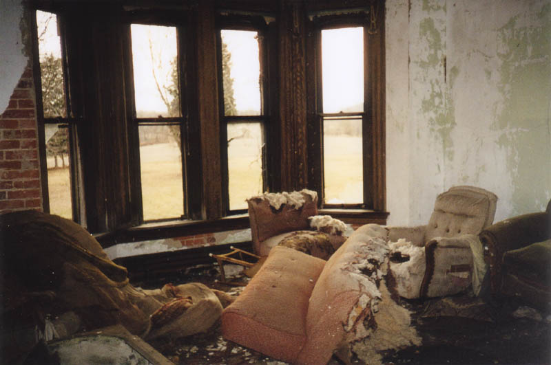
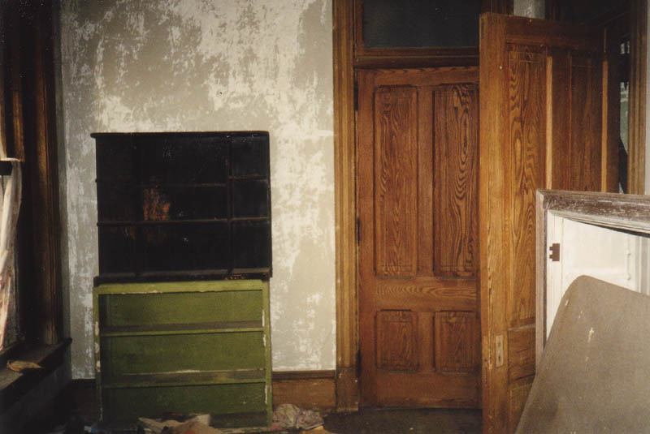
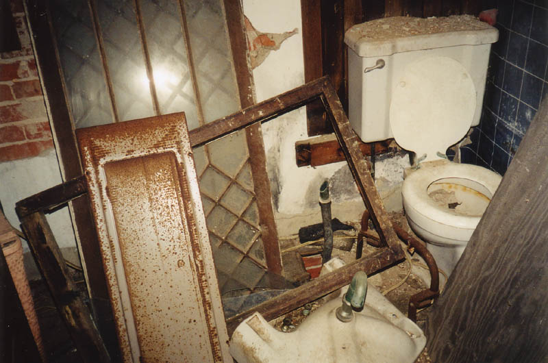
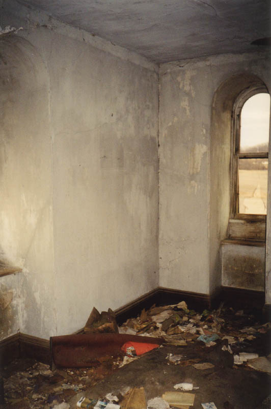
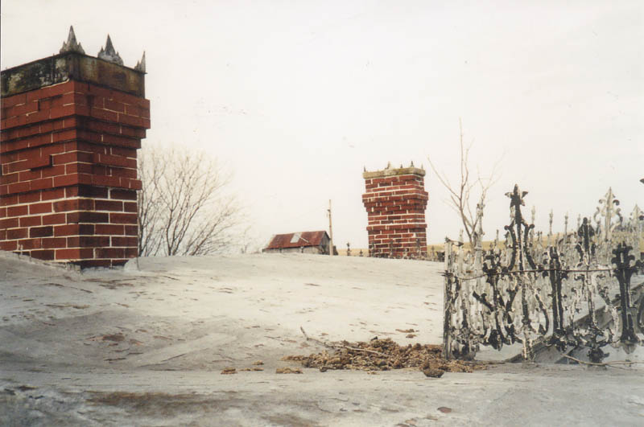

The best room upstairs is the better living room, which has a sliding door leading into it, and provides a beautiful view of the fields out front. This one has been trashed as badly as the rest of the house, but you can still tell how nice it must once have been.

There are a couple of bedrooms on this floor. With the windows unboarded, they seem much nicer and cleared-out than the first floor does during the day. In a front bedroom on the second floor I came across a few kids' books from the 1960s.

Here's the lovely bathroom, with all the junk piled inside. It's at the end of the hall on the second floor.

But it's the third floor which has the most bedrooms. In fact, the third floor is nothing but bedrooms. Most of them are filled with animal crap and stink pretty bad. In one we even came across an old bed with a really disgusting mattress.


Mudhouse Mansion has at least six bedrooms, maybe eight, depending on what an occupant used them for. On our first exploration it seemed to be in good enough shape that someone could renovate it, if they really wanted to put some effort into the job. But after the fire it's hard to say whether or not the house is salvageable. As long as the owners are stonewalling purchase offers there's not much chance of that happening anyway.

I used the box springs as a ladder and climbed through the opening in the third floor hallway ceiling to visit the roof. It's all angled so much that I didn't want to risk walking on it, but I did snap a terrible picture.

Every time I've been to Mudhouse I've kept my eyes and ears open for ghosts. None have ever shown themselves. No northern slaves, no murdered family members, no Bloody Marys. Very disappointing, especially since I've never seen a building which looked more haunted. Lately I've gotten varying reports from the front; some tell me it's gotten harder to break into due to a police presence or the angry Ms. Mast, while others say that has diminished somewhat and it's just as easy as ever. It's always a gamble. But if you do happen to visit the place and see any ghosts, please do get in touch.
Back